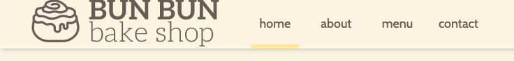
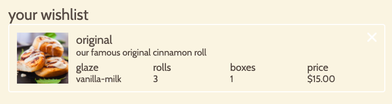

Background
Problem
Bun Bun Bake Shop, a fictional bake shop, is expanding its operations
to allow its customers to order online. They need a website that
would enable customers to learn more about them, browse the menu, and
place an order.
Insight
Based on user studies, I found that ordering and shopping websites
generally fail to leverage design to improve the efficiency of the
ordering process.
Outcome
I created a website that leverages design theories and techniques
and places a unique emphasis on the needs of the user.
Initial Research
competitive analysis
I analyzed three different online bakery websites. These were online
bakeries in pittsburgh. Overall, I found the following strengths and
weaknesses in these websites:
Strengths
- Clean and logical menu and menu titles
- Clear display of items in the cart across different pages
- Filtering and sorting mechanism to fit the user’s needs
- Quick view feature for products so users stay on the same page
Weaknesses
- Users can’t view all products at once; products are segmented
into categories right away.
- Some clickable buttons did not seem clickable.
- There is poor organization of items in the page, specifically
for adding items to cart.
Prototyping
Low-Fidelity Prototyping
I first created rough sketches of the website, focusing on the flow
of the website. The first prototype was done without any prior
research. This rapid prototyping session was followed by a quick user
testing where I used the Wizard of Oz technique. I then iterated on
my first prototype based on feedback and my competitive analysis.
After which, I conducted another user test. This user test would
serve as the basis for my next prototype before I created my
high-fidelity prototype on Figma.
High-Fidelity Prototyping
Moving forward, I used figma and invision to create a clickable
high-fidelity prototype based on the goals of expected users,
considerations for the design, and various aspects of the design
and screen transition.
Goals of Expected Users
- Learn more about the store, contact or visit the store,
browse the menu, and order cinnamon rolls online
- Research options for ordering large quantities of
cinnamon rolls online for special occasions or events
Main Considerations for Prototype Design
- Users can get overwhelmed by too much information on each
page
- Bakeshop websites are expected to be delicate and pretty.
- Clickable elements need to look clickable.
- Users are accustomed to various design patterns (header position,
footer information, design of pages, etc.).
Motivations for Prototype Design and Screen Transitions
- For menu access at any time, header position is fixed.
- Users can edit their carts and change their minds before
checking out.
- Reassure users of actions with pop-ups (ex. successfully add to
cart).
- Users can be clear of actions they can take. Input fields are
white, buttons are yellow.
Development
HTML/CSS Implementation
This was my first time coding a website, and the implementation and
development process was difficult. I was challenged not to use any
existing frameworks and libraries, so it was difficult to make
everything from scratch. In this process, I’d like to share
the finalized brand identity for the bakeshop.
Brand Identity of the Client
- Young and upbeat; young persona and uses fun colors
- Simple and special; simple color sceheme and many spaces
- New and upcoming; follows trends and shows it off
JavaScript Implementation
In the final process of this project, I was asked to implement
JavaScript to the website for features like adding and removing an
item from the cart and making elements responsive to the user’s
selection. In doing these, I found several programming concepts to
be essential:
- Setting and getting storage
- Creating and using functions
- Getting elements from HTML
- Adding and removing elements to the HTML
- Changing indexes of forms, such as drop-down menus
Final product
Features
Fixed header with large target size for links

Shopping cart page

Wishlist page

Reflection
This experience was very fun and humbling. Each prototype, user test, and
implementation process was very significant to the final outcome. In
this project, my greatest takeaway was how much websites are
currently being developed with numerous features to help the user
out as much as possible. Subtle helps like making the target of a
clickable area larger could greatly improve the user experience, even
without the user's knowledge. It's very interesting to see design and
psychology theories be implemented in website design, sometimes
without our knowledge.